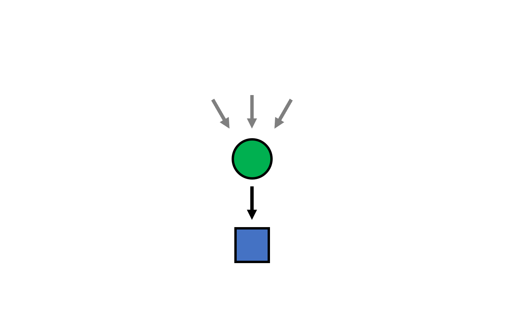

I work on AI + dev tools.
When I started as a PhD student, the growth of my project was proportional to my effort. Of course, many people mentored me along the way and boosted my productivity.
Later I began collaborating with other researchers. This was the first time I saw that the whole can be greater than the sum of the parts.
As a professor, I quickly realized that investing even an hour into helping my grad students could save them 10+ hours of effort.
Amplifying the productivity of others was far more gratifying to me than my own individual contributions. Recently, I joined Microsoft where I have the opportunity to scale this even further.
I don't want to stop there. I want to amplify the productivity of others such that they can amplify others such that they can amplify others... ad infinitum.
But don't forget, the arrows actually go both ways.
Inspired by Matt Might's illustrated guide to a Ph.D.